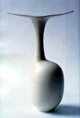

| A
Chinese Aesthetic - The Ceramics of Vivienne Foley
Article by Stacey Pierson
Originally published in Ceramics
Art & Perception. Reprinted by permission.
Historical Chinese ceramics have inspired a number of studio potters
in the 20th century, particularly in Britain where East Asian ceramics
were championed by Bernard Leach and his followers. In the late
20th century, Chinese glazes have become part of the standard repertoire
for any potter or student of pottery such that many collectors are
astounded when they discover that the Chinese stoneware with a 'chun'
glaze that they have just handled dates to the 12th century and
not 1990. Examples of such fine historical Chinese ceramics can
be seen in collections around the world but some of the best are
to be found in London at the Percival David Foundation. It is here
that potters have found inspiration and one often sees in their
work similar characteristics to some of the finest pieces in the
museum.
The collection of Chinese ceramics in the Percival David Foundation
is one of the most important collections of this nature in the world.
Formed by Sir Percival in the early part of this century, the collection
dates primarily from the 10th to 18th centuries and was given to
the University of London in 1950. As a university collection, the
ceramics are used for teaching and are also displayed to the general
public. The collection has been an important resource for potters,
many of whom have visited the galleries and have come away with
a new appreciation of Chinese ceramic technology and aesthetics.
One of the most dedicated students of the collection has been Vivienne
Foley, a successful studio potter based in London, who has taken
the opportunity to study the pieces from both an academic and a
practical perspective. Not surprisingly, one sees many echoes of
later Chinese porcelain in her work, an influence which she freely
acknowledges.
Like many potters, Foley was first inspired by the fine Song (10–13th
century) ceramics in the David Collection, including the Ru, Jun
and Guan wares. Over the years, she has also taken the opportunity
to study later Ming and Qing porcelains and the way they are constructed.
When handling such pieces, she has often commented on their precision,
the even thickness and weight of the wares, and the tactile qualities
of the glazes. In her most recent work, one can see these parallel
influences of both classic Song ceramics and precise imperial porcelains
which are in fact early industrial wares. In both her monochrome
white porcelains and black magnesia glazed vessels, the Song appreciation
for beautiful, organic forms combined with subtle, wonderfully textured
glazes is evident. In addition, like the pieces in the museum, Foley's
vessels can also be appreciated as sculpture, though essentially
they are functional objects.
 Foley's
preferred medium is porcelain which has the purity and strength
necessary to create her characteristic thrown and constructed forms.
Many of the vertical forms have bifurcated mouth rims which look
modern, almost Memphis in style, but in fact can be traced back
to China where often fine ceramics took the forms of silver and
other metals which usually had shaped mouth rims. From the 10th
century, in metalwork and fine ceramics, one begins to see more
complex flower-shaped rims which are reflected in Foley's work.
She has often combined these complex rims with tightly constricted
necks which are extremely delicate and difficult to produce. Such
slender tall necks can be seen on Song ceramics from the Jun kilns
in north China but they are usually combined with simple flaring
mouth rims. The effect in Foley's work is to create a sense of complex
harmony in form rather than simple balance as was the aim of the
Chinese potter. In Foley's bowl and dish forms, one is immediately
reminded of Chinese ceramics of a later period, notably the Xuande
period (1426-35) when bowls were thrown with everted rims and sinuous
s-shaped profiles. These bowls were made in large quantities at
the Imperial kilns of Jingdezhen for the exclusive use of the court.
Foley brings this form up to date with smooth lustrous black glazes
that are sometimes embellished with abstract white inlays. Foley's
preferred medium is porcelain which has the purity and strength
necessary to create her characteristic thrown and constructed forms.
Many of the vertical forms have bifurcated mouth rims which look
modern, almost Memphis in style, but in fact can be traced back
to China where often fine ceramics took the forms of silver and
other metals which usually had shaped mouth rims. From the 10th
century, in metalwork and fine ceramics, one begins to see more
complex flower-shaped rims which are reflected in Foley's work.
She has often combined these complex rims with tightly constricted
necks which are extremely delicate and difficult to produce. Such
slender tall necks can be seen on Song ceramics from the Jun kilns
in north China but they are usually combined with simple flaring
mouth rims. The effect in Foley's work is to create a sense of complex
harmony in form rather than simple balance as was the aim of the
Chinese potter. In Foley's bowl and dish forms, one is immediately
reminded of Chinese ceramics of a later period, notably the Xuande
period (1426-35) when bowls were thrown with everted rims and sinuous
s-shaped profiles. These bowls were made in large quantities at
the Imperial kilns of Jingdezhen for the exclusive use of the court.
Foley brings this form up to date with smooth lustrous black glazes
that are sometimes embellished with abstract white inlays.
> Next
More Pots of the Week
|